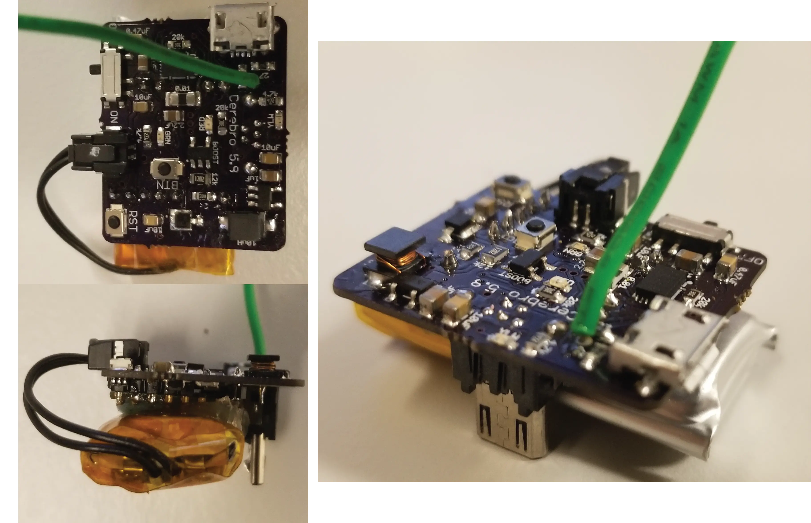

Cerebro¶
{kind=link}
Bill of Materials¶
| Qty | Description | Datasheet | Order Link |
|---|---|---|---|
| 1 | Cerebro PCB | Cerebro 5.8 |
OSH Park |
| 1 | 400 mAh Battery | 3898 |
Adafruit |
| 1 | 915 MHz Radio | RFM69HCW |
LowPowerLab |
| 1 | Microcontroller | ATMEGA32U4-MUR |
Digi-Key |
| 1 | 8 MHz Resonator | CSTCE8M00G55-R0 |
Digi-Key |
| 1 | 3.3V Linear Regulator | AP2112K-3.3TRG1 |
Digi-Key |
| 1 | Fuel Gauge | BQ27441DRZR-G1B |
Digi-Key |
| 2 | DAC (12-Bit) | LTC2630ACSC6-LZ12#TRMPBF |
Digi-Key |
| 2 | Op Amp | OPA237NA/3K |
Digi-Key |
| 2 | NPN Transistor | FJX3904TF |
Digi-Key |
| 1 | Boost Converter | MIC2288YD5-TR |
Digi-Key |
| 1 | Schottky Diode | MBRM140T3G |
Digi-Key |
| 1 | 10uH Inductor | LQH43CN100K03L |
Digi-Key |
| 2 | 2mm Pitch Male Header | M22-2510805 |
Digi-Key |
| 1 | Slide Switch | PCM12SMTR |
Digi-Key |
| 2 | Momentary Button | B3U-1000P |
Digi-Key |
| 1 | Micro USB vertical plug | ZX20-B-5S-UNIT(30) |
Digi-Key |
| 1 | Micro USB shielding | ZX20-B-SLDC |
Digi-Key |
| 1 | Micro USB horizontal socket | 10118194-0001LF |
Digi-Key |
| 1 | Molex Micro-Lock socket | 5055670271 |
Digi-Key |
| 1 | Molex Micro-Lock plug with wire | 0151360206 |
Digi-Key |
| 1 | Red LED (0603) | LTST-C191KRKT |
Digi-Key |
| 1 | Amber LED (0603) | LNJ437W84RA |
Digi-Key |
| 1 | Green LED (0603) | SML-D12M8WT86 |
Digi-Key |
| 1 | 470 nF Capacitor (0805) | Digi-Key | |
| 2 | 1 μF Capacitor (0805) | Digi-Key | |
| 1 | 2.2 μF Capacitor (0805) | Digi-Key | |
| 3 | 10 μF Capacitor (0805) | Digi-Key | |
| 1 | 0.01 Ω Resistor (1206) | Digi-Key | |
| 2 | 12 Ω Resistor (0603) | Digi-Key | |
| 4 | 27 Ω Resistor (0603) | Digi-Key | |
| 1 | 2 kΩ Resistor (0603) | Digi-Key | |
| 3 | 4.7 kΩ Resistor (0603) | Digi-Key | |
| 2 | 12 kΩ Resistor (0805) | Digi-Key | |
| 5 | 20 kΩ Resistor (0603) | Digi-Key | |
| 2 | 100 kΩ Resistor (0603) | Digi-Key |
Programming Instructions¶
Setup Arduino IDE¶
Follow these instructions : https://learn.adafruit.com/adafruit-feather-32u4-basic-proto/arduino-ide-setup
Burning a Bootloader¶
Cerebro is designed to be easily reprogrammed through the onboard micro USB. However when builing a Cerebro from scratch, you must first burn a bootloader onto the microcontroller in order to later upload programs through USB.
To burn a bootloader you need an external programmer that will talk to the microntroller through the In-Circuit Serial Programmer (ISP). You can use an Arduino as your external ISP and temporarily solder wires to the Cerebro PCB. I recommmend using a USB microISP along with a Pogo Connector.
- The programmer needs to connect to the ISP thru-holes (MOSI, MISO, SCK, RST, GND and 3V) on the Cerebro PCB.

- In the Arduino IDE, select Tools->Board->”Adafruit Feather 32u4”
- Select Tools->Programmer->”USBtinyISP” or Tools->Programmer->”ArduinoISP” if using an Arduino as the programmer
- Select Tools->Burn Bootloader

Uploading Test Program¶
To test that the components on the PCB are soldered correctly and that all of the required connections are being made, we upload a test program.
- Open testBoard.ino in the Arduino IDE.
- Select Tools->Board->”Adafruit Feather 32u4”.
- Under the Tools->Port menu look to see what Serial Ports are available.
- Connect a battery to Cerebro.
- Connect Cerebro to your computer with a usb cord and switch on Cerebro. A red LED should be lit, indicating that Cerebro is on.
- There should now be a new serial port under the Tools->Port menu that wasn’t there in step 2. This is the Cerebro serial port, select it. If there a new serial port didn’t appear in the menu, make sure Cerebro is turned on and connected via USB. If it still doesn’t appear in the menu, the bootloader may have not been burned correctly, so try burning the bootloader again.
- Click the upload button to upload the the testBoard firmware.
- Open up Serial Monitor by click the magnifying glass icon.
- Set the Serial Monitor Baud Rate to 115200 Baud.
- Two yellow LEDs on Cerebro should be blinking and text should be appearing in the Serial Monitor.
- Follow the instructions on the Serial Monitor. If everything is working properly then the battery monitor should be able to provide a Battery charge %.
Uploading Firmware¶
- Open cerebro.ino in the Arduino IDE.
- Select Tools->Board->”Adafruit Feather 32u4”.
- Click the upload button to upload the the Cerebro firmware.
Assigning a Serial Number¶
A serial number is assigned to each Cerebro. When a Base Station connects to Cerebro, it communicates on the radio channel corresponding to Cerebro’s serial number. This prevents crosstalk between Base Stations and Cerebros in the case where multiple behavior sessions are being run at the same time in the same room. Each Cerebro being used should setup a unique serial number between 1 and 255 using the process below.
- Start an Xavier session in Debug Mode. The Base Station should be connnected, and have a green check mark.
{kind=link}
- Click
Setup New Cerebro
{kind=link}
- Hold down the button labeled “BTN” on Cerebro until the nearby LED blinks twice. A green checkmark should now be next to the “Cerebro Wireless Connection”.
{kind=link}
- Fill in the “Serial Number” box with the serial number you want to give to Cerebro and then click
Set Serial Number.
{kind=link}
- After a few seconds, click the
Retry Connectionbutton to confirm everything worked. All three indicators should have green check marks. Cerebro now has a serial number saved to its memory, and whenever it is turned on it will try to communicate with a Base Station on a radio channel of the same number.